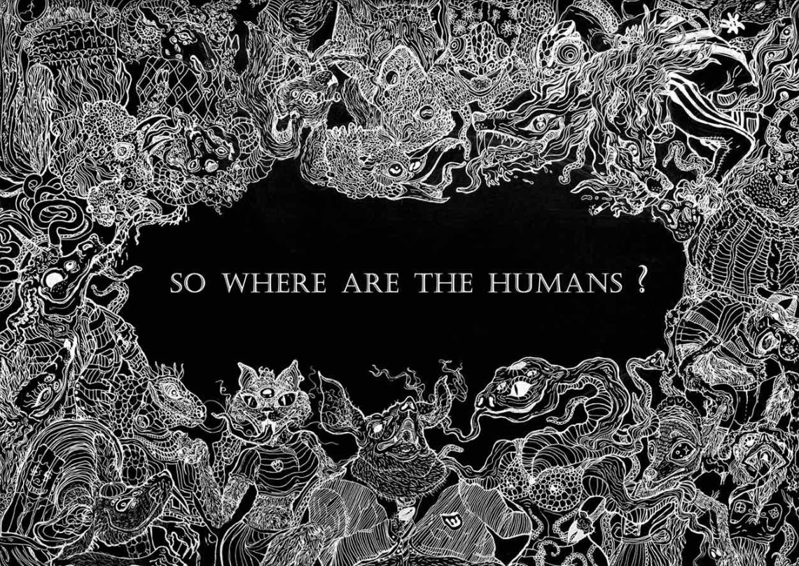

Ей всего 15, а глубина её картин заставляет задумываться даже взрослых
Лучше один раз показать, чем 10 раз рассказать. Именно так считает юная художница УСШ№3 Елизавета НЕЖИВАЯ.
«Рисовать я начала в раннем возрасте, поэтому мои первые «шедевры» создавались еще на стенах» - рассказывает ученица 9-А класса. Благодаря поддержке родителей Лиза начала свой творческий путь. Она посещала кружок рисования в ПАДИЮНе. Позже художница прошла уроки у Эммы Романовны Левадской. А год назад Лиза была ученицей художественной школы. «Больше всего я получила советов от Эммы Романовны. Для меня она – наилучший наставник, который всегда готов поделиться своими секретами».
Хоть Лиза еще не определилась со своим стилем, большинство ее работ написаны в графическом направлении. В своем хобби у художницы есть несколько кумиров – Бэнкси и Лора Зомби. Они привлекают ее простотой и смыслом своих работ – к чему и стремиться ученица 9 класса.
Свои силы юная художница пробывала в разных конкурсах, таких как «Станкович Фест», где главная задача – изобразить то, что почувствовал от прослушивания произведений композитора.

Естественно, что для создания шедевров нужны материалы! Больше всего Лиза предпочитает карандаши и ручки фирмы Fabel Castell. А чтобы покрыть расходы, она на заказ делает принты на кеды, футболки и джинсовки. Также художница выпустила 3 стикерпака (набор наклеек).
Главные фанаты Елизаветы – друзья и одноклассники. «Именно они те люди, которые поддерживают мою творческую деятельность. Я бесконечно благодарна им за поддержку в моменты, когда я начинаю сомневаться в своих творениях» - рассказывает художница.
В ближайшее время Лиза планирует создать страничку в соцсетях, где сможет публиковать свои шедевры. Но, для начала, она хочет определиться со стилем и найти время для регулярного творения.